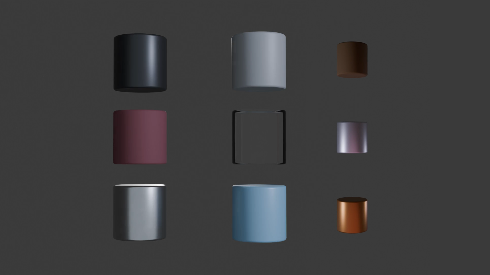
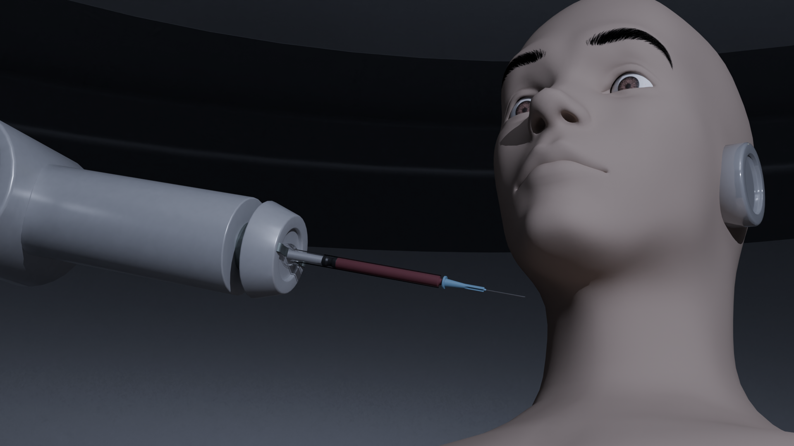
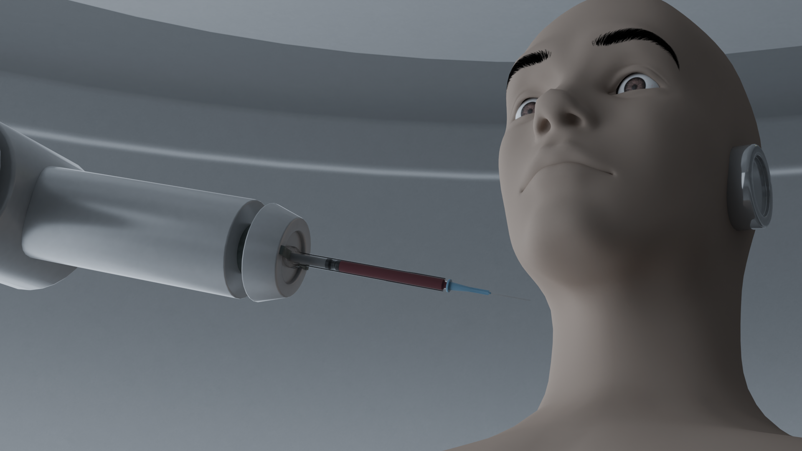
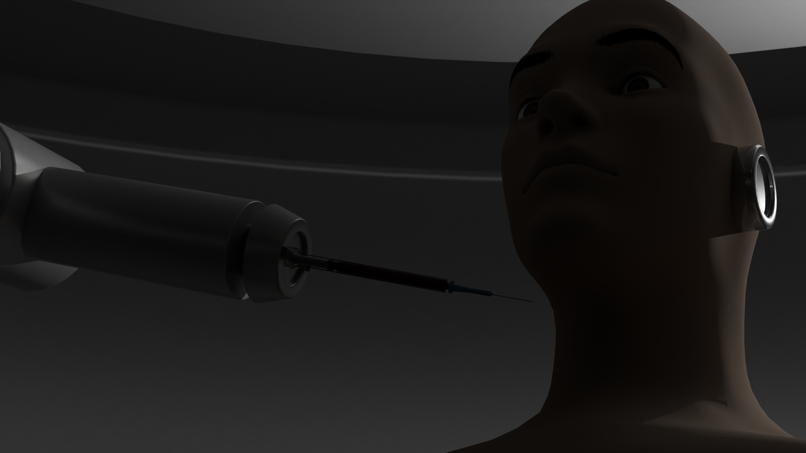

Face Runner
Un réplicant se réveille dans un laboratoire, il se fait piquer par une machine mais il tente de se défendre.Breakdown
Modélisation
Pour la partie modélisation, j'ai utilisé des références de Blade Runner et de Detroit: Become Human. Ensuite, j'ai commencé à faire l'aspect général des différents modèles avec des formes basiques et des primitives. Enfin, j'ai sculpté les différentes parties de chaque modèle à partir de ces bases avant de faire la topologie.

Rigging
Au niveau du rigging, j'ai mis des contrôleurs là où il y a un besoin pour le film d'animation. Le IK est là pour faciliter le contact et animer de manière plus rapide.
Texture procédurale
Pour la texture, j'ai utilisé la méthode procédurale pour la faire. J'ai fais le choix de faire un style assez propre pour mettre en avant le contexte médical.

Eclairage
J'ai opté pour un éclairage à trois point car cela met en valeur les différents éléments. La couleur de chaque lumière est neutre pour montrer le côté médical.



Animation
Pour la réalisation de cette animation, j'ai animé un élément à la fois pour ne pas m'éparpiller. Pour chaque élément, je commence par faire les poses clés, le blocking et l'interpolation. A partir de l'étape des poses clés, je prends différents commentaires pour améliorer l'animation et avoir le rendu que vous pouvez voir au début de la page.